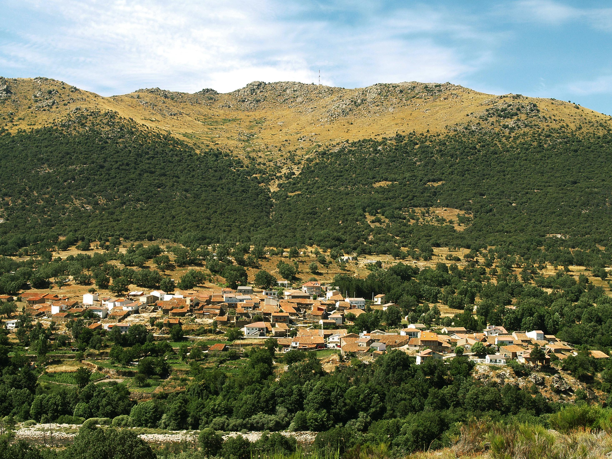
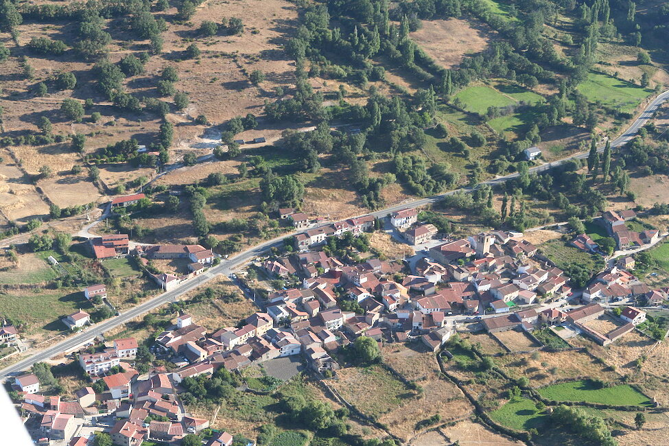
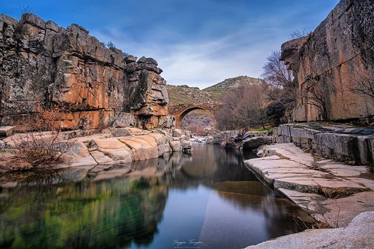

Nuestra Raíz
Todo comenzó a orillas del Tormes...
Raíces Vivas no es solo un festival; es un homenaje a nuestra tierra que nació del murmullo del agua en Angostura de Tormes. Como habitante de esta localidad, este proyecto es mi forma de devolverle la vida a sus calles y senderos.
Queremos que el visitante no solo vea la Sierra de Gredos, sino que sienta el latido de pueblos como el nuestro, donde la hospitalidad es ley y el paisaje nuestra mayor fortuna. Desde el puente medieval hasta las cumbres que nos rodean, Angostura es el alma de esta edición.
Comunidad Gredos Interior
Angostura de Tormes lidera una red de pueblos vecinos que mantienen viva la sierra.
Angostura de Tormes
El corazón del festival. Aquí se celebran los talleres principales y el mercado de artesanos a orillas del río Tormes.



Navalperal de Tormes
Aporta sus rutas de alta montaña y talleres de pastoreo tradicional para los visitantes más aventureros.
La Aliseda de Tormes
Especialistas en la conservación del río, organizan las jornadas de pesca tradicional y fotografía de naturaleza.
Nuestros Objetivos
Preservar el Tormes
Cuidar nuestro ecosistema fluvial y concienciar sobre la importancia de mantener vivos los cauces que dan nombre a nuestra comarca.
Renacimiento Rural
Combatir la despoblación atrayendo un turismo responsable que valore la cultura y tradiciones de los pueblos abulenses.
Economía Circular
Apoyar a los productores y artesanos locales de la Sierra de Gredos, creando una red de comercio justo y sostenible.